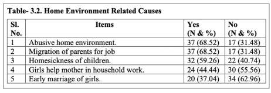
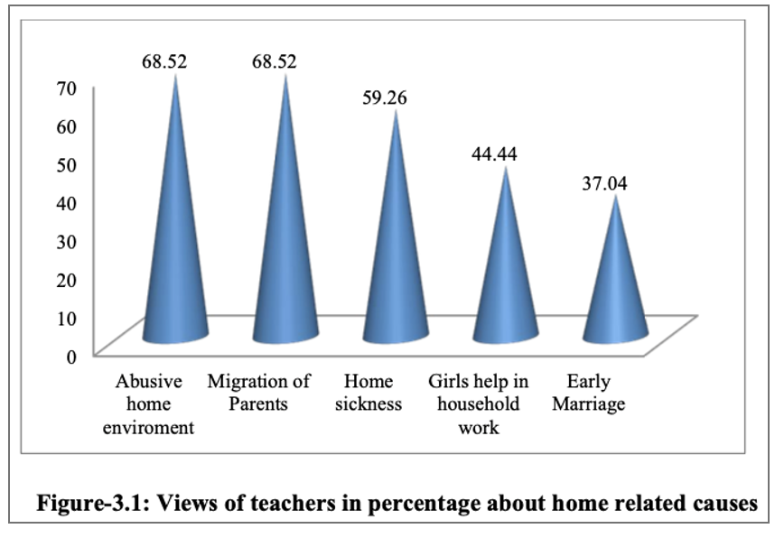
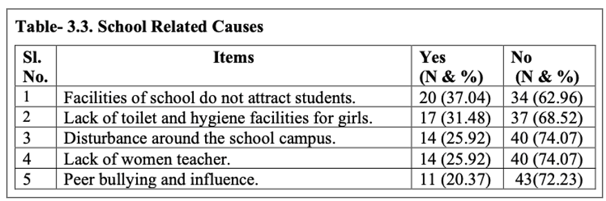
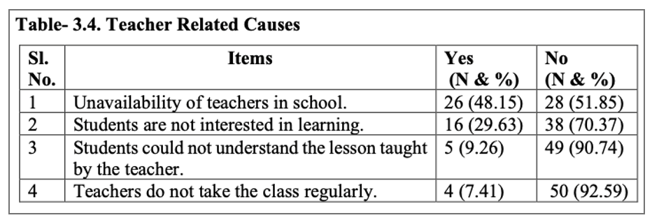
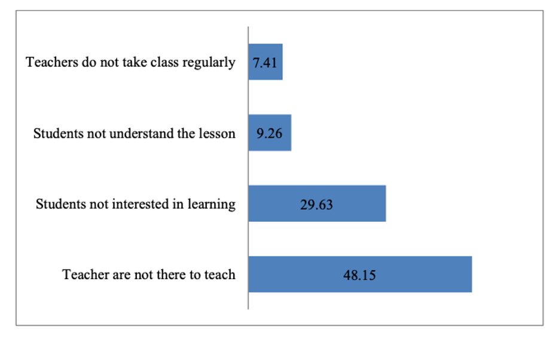

The Akshaya Patra Foundation is an NGO in India headquartered in Bengaluru. Our organisation strives to eliminate classroom hunger by implementing the Mid-Day Meal Scheme in the government schools and government-aided schools. Alongside, Akshaya Patra also aims at countering malnutrition and supporting the right to education of socio-economically disadvantaged children.
Since 2000, Akshaya Patra has been concerting all its efforts towards providing fresh and nutritious meals to children on every single school day. We are continuously leveraging technology to multiply our reach. The state-of-the-art kitchens have become a subject of study and have attracted curious visitors from around the world.
Our partnership with the Government of India and various State Governments, along with the persistent support from corporates, individual donors, and well-wishers have helped us to grow from serving just 1,500 children in 5 schools in 2000 to serving 1.8 million children.
Today, Akshaya Patra is the world’s largest (not-for-profit run) Mid-Day Meal Programme serving wholesome food every school day to over 1.8 million children from 19,039 schools across 12 states & 2 Union territories of India.
The Growth of The Akshaya Patra Foundation – A Quick Overview
On 28 November 2001, the Supreme Court of India passed a mandate, "Cooked mid-day meal is to be provided in all the Government and Government-aided primary schools in all the states." And, Akshaya Patra was also called upon to provide testimonies to the Supreme Court.
By the time the Ministry of Human Resource Development - Department of School Health and Education extended its support to the initiative in 2003, Akshaya Patra was already reaching out to 23,000 children.
Today, Akshaya Patra has 58 kitchens spread across 13 states & 1 Union territories of India, a result of the successful partnership with the Government of India, various State Governments and generous supporters.
Board of Trustees
Sri Madhu Pandit Dasa
Chairman, The Akshaya Patra Foundation
Madhu Pandit Dasa was born in Nagercoil, India. Armed with a B.Tech in Civil Engineering from IIT-Mumbai, he dedicated himself to the service of humanity while doing his M.Tech from IIT-Mumbai in 1981. In 1994, he initiated an integrated social development project for the benefit of rural people in Karnataka's Mysuru and Mandya districts. He set up a prototype organic farm based on environment-friendly farming methods, and an internationally-accredited farmer-training centre, on 110-acre land by the banks of the river Kaveri in Srirangapatam. Inspired by his spiritual guru, Srila Prabhupada’s message, he initiated the Akshaya Patra school lunch programme alongwith Sh. Mohan Das Pai, to provide mid-day meals to children studying in five government schools in Bengaluru. He was instrumental in designing the first centralised and mechanised kitchen of Akshaya Patra, to provide mid-day meals to underprivileged children in Government schools of Bengaluru Rural District, in July 2000. Currently, he is involved in devising strategies for innovative new models, governance, visionary guidance and in envisioning the path forward for the programme implementation.
Sri Chanchalapathi Dasa
Vice Chairman, The Akshaya Patra Foundation
Sri Chanchalapathi Dasa (a.k.a. S Chandrashekar) was born in 1963 in Bengaluru, Karnataka, India. While an undergraduate student in PSG College of Technology, Coimbatore, he became interested in the message and mission of Srila Prabhupada, the founder-acharya of ISKCON. Later he joined Indian Institute of Science (IISc), Bangalore for a Masters program in Electrical & Communication Engineering. In 1984 he became a full-time dedicated member of ISKCON-Bangalore. He has been involved in the implementation of various programs of ISKCON-Bangalore and currently involved in strategy, growth, and governance of Akshaya Patra Foundation.
Sri Satya Gaura Chandra Dasa
Trustee, The Akshaya Patra Foundation
Satya Gaura Chandra Dasa is responsible for overseeing the overall Operations of Hyderabad Unit and is also providing guidance and governance to the Unit Operations In-Charge. Satya Gaura Chandra Dasa holds an M.Tech degree from IIT Chennai. He had worked with American MNC, Novell Software prior to starting his spiritual journey
Initiatives of Akshaya Patra
COVID-19 FOOD RELIEF
Support from State Agencies, District Authorities is enabling us to make a difference.
The cost of each cooked meal is ₹25 and the cost of each grocery kit is ₹825.
The kit contains rice, pulses, and vegetables etc.
This Programme is one of its relief services to support food and hygiene needs of Anganwadi beneficiaries.
According to the Food and Nutrition Board, pregnant and lactating women require 135g every day.
Each Happiness Kit will be packed with nutritious food items, immunity boosters,hygiene kit, and learning materials.
With a contribution of Rs. 550 towards a Happiness Kit, you can nourish and nurture a child during the prevailing pandemic.
Raising funds for the under-privileged children to understand what is refraining students from joining schools on time.
I am raising funds for the under-privileged children to understand their state of mind and examining
the whole set of reasons like what is refraining them from joining schools on time. Due to lack of interest in education, the students prefer to invest their time in doing the side hustle activities basically earning for the family due to parental pressure and several other reasons. Moreover, they are being suffered from various issues like low self-esteem, financial problems, high levels of stress and worry, various forms of abuse, drug abuse, violence, decision-making, don’t foresee any use of education and other family problems. This is important to me because I feel early childhood education is not only about learning basic skills, it is so much more than that as it involves a time when children learn critical social and emotional skills and a partnership is formed between the child, their parents and the teacher. When this is done successfully, it lays the groundwork for it to continue throughout the child’s education and will ultimately help this nation grow.
By
Tanvi Vijay
All it Costs for approximately 232 meals/child/year is INR 1100.
This campaign to raise support for 20 under-privileged children for unlimited food for education.
I am requesting your support to reach my target of 22000/-. Please help by donating or sharing the Message with your friends and family
This campaign has 80G tax benefits. You will also get feedback on how the funds were used and which school you have impacted.
So, what are we waiting for! Please do support this campaign and bring a smile to another child with your small act of kindness.
Help spread this message on your social media platforms so that more have the opportunity to share in the care of these children and donate to this noble cause.
Let’s transform the lives of these student together.
Regards;
OUR STORY
Raising funds for the under-privileged children to understand what is refraining students from joining schools on time.
All it Costs for approximately 232 meals/child/year is INR 1100. This campaign to raise support for 20 under-privileged children for unlimited food for education.
Role of Elementary Education in the National Development
Education is one of the basic needs for human development and going to school
regularly is crucially important for advancement of a student’s academic and social
skills (Ghosh et.al. 2017). It is one of the primary agents of transformation towards
development. It is the series of activities which may either improve the immediate
living conditions or increase the potential for future living. It may play an important
role in bringing tangible benefits by developing the skills of the people. It may
expand livelihood opportunities and increase earning potential and thus help in
tackling the problem of poverty at large. The major role that education has been
able to play is regarding knowledge inculcation and skill improvement of the
person. Amartya Sen’s argued that providing primary education, we can bring for
faster development in India.Education is the principal factor in the development and growth of a child
in preparing them to be a responsible and capable citizen. It is the most important
asset we have because knowledge is the type of wealth that we will never lose no
matter what we do, and the more we share it the more it increases.
Elementary education is regarded as the foundation on which learning, growth and development
of the individuals takes place. It is the primary objective of elementary schools to
create the foundation on which growth and development of the individuals takes
place. However, basic knowledge starts with elementary education without it none
of our dreams will be possible. Elementary education is like the first and foremost
phase, we take in life; we will never be able to run if we don’t learn how to walk. It
plays a very critical role in ones educational life. Elementary education has certain
targeted roles to play in a child’s life such as enabling children to learn reading,
writing, arithmetic, and creativity along with character building, critical thinking,
logical judgement, communication and socialization skills, behavioural, social,
cultural, cognitive, physical and emotional development.
Elementary education helps pupil to build challenging and competitive environment among themselves
that help to create competition and motivate them to work harder, better, and
creatively bringing out the best out of themselves. The key objective of the
elementary education is to teach children to think analytically, to achieve high
living standards, to face the challenges posed by technological development and
advancement of citizenship and basic values. It provides safe and positive
environment where effective learning can take place. Primary education aimed to
provide an opportunity to have a team that is steady to interact. Elementary
education enables students to make friends who facilitate acquisition and
development of communication skills. It is the phase where students may be
influenced positively or negatively. The future of a child is totally dependent on the
elementary education. It would boost kids’ self-confidence and offer child the skills
they need for the long success in this competitive world. The growth is parallel to
the future of our country, reflected through quality of the present education system.
A school must stimulate curiosity in the young, impressionable minds and equip
them with tools to be better human beings.
Earlier the education system was based on 10+2 pattern but now after
National Education Policy (NEP) 2020 came into force and it has been changed to
5+3+3+4 structure. This policy has been revised after 34 years. In NEP focus is
given on early childhood as it is the foundation age. Attaining foundational literacy
and numeracy for all children will thus become an urgent national mission, with
immediate measures to be taken on many fronts and with clear goals that will be
attained in the short term (including that every student will attain foundational
literacy and numeracy by Grade 3). The highest priority of the education system
will be to achieve universal foundational literacy and numeracy in primary school
by 2025 (NEP 2020). NEP has taken initiatives to bring students to the schools. The
first is to provide effective and sufficient infrastructure so that all students have
access to safe and engaging school education at all levels from pre-primary school
to Grade 12. Besides providing regular trained teachers at each stage, special care
shall be taken to ensure that no school remains deficient on infrastructure support.
The second is to achieve universal participation in school by carefully tracking
students, as well as their learning levels, to ensure that they
(a) are enrolled in and
attending school, and
(b) have suitable opportunities to catch up and re-enter school
in case they have fallen behind or dropped out.
Concerns of Government Elementary Schools
Majority of schools in India is sponsored by the Government either Central or State. Most of the schools are run by the state Government which provides education to the children in mother tongue or in regional languages. These schools have many issues and concerns,
some of these are disused in following sections.
Lack of Infrastructure: Infrastructure is an important tool for facilitating quality education in elementary education system. It is a comprehensive term which includes school buildings, playgrounds, civic amenities, libraries, laboratories, drinking water, toilet facilities teaching learning material etc. Without adequate infrastructural
facilities the students will not feel happy and comfortable to come to school.
Shortage of Teachers: Teachers are the torch bearers in the life of students. If they will not be in sufficient number in the school, then teaching learning will be hampered brutally. The shortage of teachers has been detrimental upon education,
learning, growth and development of the students and school functioning.
Inadequate Teaching Learning Materials: The teaching learning materials bring life to learning by stimulating students to learn. The use of instructional materials in the classroom has the potential to help the teacher explain new concepts clearly,
resulting in better student understanding of the concepts being taught.
Poor Monitoring: Monitoring and supervision is one of important criteria for evaluating the progress of the students in each aspect. If both teachers and students will be supervised from time to time, then they will feel the
responsibility towards their work and they will be punctual in taking the responsibility.
Poor Monitoring: Monitoring and supervision is one of important criteria for evaluating the progress of the students in each aspect. If both teachers and students will be supervised from time to time, then they will feel the
responsibility towards their work and they will be punctual in taking the responsibility.
Low Socio-Economic Status of Parents: Socio economic status plays a major role in quality education of students. If parents of the students will be socially strong then they will be able to
get proper education with all the necessary amenities.
Low Attendance of Students: Low attendance of students in school is due to many factors. Students are absent from school, but the cause of absence is both inside and outside the school. It can also be classified as voluntary i.e., when student may not wish to attend the school and involuntary includes when they miss school due to their family situations or due to unavoidable circumstances (Birioukov 2017).
It means that students are not coming regularly to school which hampers their sequence of knowledge.
The above-mentioned points reveal the major concerns of the elementary schools. These are the factors which affect the proper functioning of the schools and ultimately it results in the low attendance of students in primary schools.
It also hampers the literacy rate, economic status of the country.
Initiatives of Government of India
All these initiatives were taken by Government of India for promoting
elementary education but still there are some reasons for which schools did not
function properly may results in low attendance among school students.
Mid-Day Meal Scheme: It is also known as Nutrition support to Primary
Education and was launched in 1995. The main aim of this programme
is to eliminate classroom hunger of children and increase attendance and
enrolment of children at school. It also provides chance to improve
interaction among students socially and emotionally beyond all barriers
of castes.
National Programme for Education of Girls at Elementary Education
(NPEGEL): It was introduced by Government of India in 2003 to reach
girls who are not enrolled in schools. The focus of this programme is to
break gender stereotypes and girls can get good education at elementary
level. Government is also providing stationary, uniforms and workbooks
to the girls.
Sarva Sikhsha Abhiyan (SSA): It is an Indian Government programme
started in 2001 with an aim to universalise elementary education in a
time bound manner, as mandated by the 86th Amendment to the
Constitution of India making free and compulsory education to
children between the age group of 6 to 14 a fundamental right.
Right to Education Act: It was introduced in 2009 to made education
free and compulsory for the students of 6-14 years of age. They are not
supposed to pay any kind of fee to complete education up to elementary
5 level. It also ensures all round development of the child by providing
uniforms, textbook and stationery.
Beti Bachao, Beti Padhao: This scheme was initiated in 2015 for girl
education. This was started to protect girl child from female feticide and
help with their education. It also stops gender discrimination and
determination
Shiksha (2019): It is an externally funded programme with
proposed to treat school education holistically without segmentation
from pre-nursery to class 12. It subsumes three schemes Sarva Shiksha
Abhiyan (SSA), Rashtriya Madhyamik Shiksha Abhiyan (RMSA) and
Teacher Education (TE). The vision of this scheme is to ensure inclusive
and equitable quality education from pre-school to senior secondary
stage in accordance with the sustainable development goal. This scheme
aims to ensure inclusive and equitable quality education from pre-school
to senior secondary stage in accordance with the sustainable
development goal for education
NISHTHA Programme (National Initiative for School Heads and
Teachers Holistic Advancement: It was started on 21st August 2019. The 6
main objective of this programme was to improve learning outcome of
students at elementary level. Head teachers and teachers are oriented
and develop their skills on various aspects so that they can motivate and
encourage students to foster critical thinking among students
Theoretical and Research Base of Low Attendance of Students
Attendance is the key for a child to be successful in their school career. Vital things are missed if the child is absent even just one day.
Irregular students devastate their success in school. Students are frequently not coming to school due to socio- economic background of the family.
Lower the family income higher will be the learner absenteeism.
School absenteeism is an alarming problem for administrators, teachers, parents, society in general and pupils.
Unaccepted absences have a negative effect on peer relationships, which can cause further absences.
Attending school is very important and essential for the overall development of the child i.e., social, emotional, physical, academic and personal.
Details of Questionnaire for Teacher
This tool was prepared in order is to study the causes of low attendance in elementary schools from teachers.
The tool consists of factors relating to home, school, student and teacher to know the reasons of low attendance of students at elementary level and it is measured by two-point scales i.e. Yes and No.
The following aspects are considered to prepare the questionnaire.
Home Related Causes of Low Attendance
This is the first aspect to study the low attendance of students in elementary schools.
It includes home related causes such as both parents are working, abusive home environment, migration of parents in search of job etc.
School Related Causes of Low Attendance
This aspect includes factors related to school which are responsible for low attendance of students.
Some of them are like students did not understand the lesson taught by teacher, students do not come after long vacation, due to non-completion of homework etc.
Students Related Causes of Low Attendance
This is the third part of the tool which deals with the factors related to student low attendance.
Some of the causes of not attending school are students are weak in studies, inferiority complex, home sickness, poor relation with peers etc.
Teacher Related Causes of Low Attendance
This is the last section of the tool which deals with teacher related factor.
It includes items like; teachers do not take class regularly, use traditional method of teaching, ineffective teaching, do not relate teaching to the real life etc.
According to the data collected by investigators from school teachers, we have come to know the causes of low attendance of students in elementary schools –
The table-3.1 indicated that more than 68% of teachers viewed causes of low attendance are both parents are working and students go for earning money for the family. 59.26% of teachers expressed that students do not attend school due to illness of family member. Further, less than 50% of teachers are of the opinion that students do not attend school as parents do not encourage them to attend school and students are involved in the domestic work.
Again, 24.07% of teachers said that students do not come to school because the timing of parents work, and school hour is same.

The table- 3.2 highlighted that 68.52% of teachers are of the view that students do not attend school because of migration of parents for job from one place to another place and due to abusive home environment. The table also revealed the views of 59% of teachers that homesickness causes low attendance.
44% of teachers are of opinion that girl’s student does not attend school because they help mother in household work.
The home factors affecting low attendance of students is graphically presented in figure-3.1.

It can be said that students are not attending school regularly due to abusive home environment,
frequent migration of parents for work and homesickness of students.

It is revealed from the table-3.3 that 37.04% of teachers expressed that facilities of school do not attract students to come to school. 31.48% of teachers are of the opinion that lack of toilet and hygiene facilities causes low attendance among girls. 25.92% of teachers viewed that disturbance around the school campus creates dislike among students to come to school and lack of women teacher is the cause of low attendance.
Further, 20.37% of teacher said that students do not attend school due to peer bullying.

It is found from the table-3.4 that 48.15% of teachers identified that students do not come to school as teachers are not there to teach them and 29.63% teachers viewed that students do not come to school as they are not interested in learning. Further,
it is expressed by 9.26% of teachers that students do not come to school as they could not understand the lesson taught by the teacher. It can be concluded that lack of teacher in the school is the cause of low attendance as per the opinion of teachers.
Teacher related reasons for low attendance of students is graphically presented in the figure-3.2.

MAJOR FINDINGS
Children studying in elementary school go to work to earn money for the family is one of the causes of low attendance.
Nobody in the family to send children to school as both parents go for work is one of the causes of low attendance as expressed by more than 68% of teachers.
Children are involved in domestic work/ help parents in work, take care of siblings etc. for which they miss the school.
Further, parents do not encourage children for going to school regularly may be the cause of low attendance.
Majority of parents migrate from one place to another place for searching job so children are also migrate along with parents for which children could not attend school regularly.
Abusive home environment of children does not encourage and monitor children to attend school regularly.
Further, homesickness of children may be one of the factors of low attendance.
THE AKSHAYA PATRA FOUNDATION
The Akshaya Patra Foundation is a not-for-profit organisation headquartered in Bengaluru, India.
The Foundation strives to eliminate classroom hunger by implementing the Mid-Day Meal Programme.
It provides nutritious meals to children studying in Government schools and Government-aided schools.
Akshaya Patra also aims to counter malnutrition and support right to education of children hailing from socio-economically challenging backgrounds.
OUR VISION
NO CHILD IN INDIA SHALL BE DEPRIVED OF EDUCATION BECAUSE OF HUNGER.


.jpg)